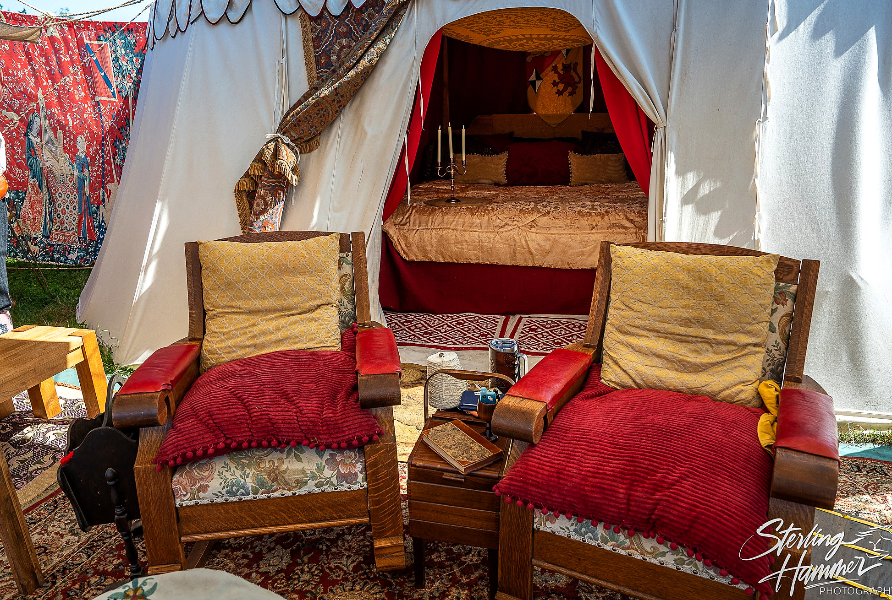

Come curious.Leave legendary.
Take a seat beneath the canvas. Play a game older than kingdoms. Meet strangers who become friends. No experience, no entry fee, and absolutely no requirement to be good at winning.
Even the cat.
Especially the canary.
History is better played.
Cat v. Canary Guild is a volunteer-run traveling game pavilion and the public program of Cat v. Canary Foundation, a 501(c)(3) educational nonprofit.
We research, recreate, and teach board games from across the world and across centuries. Our costumed guides make the first move easy, whether you have five minutes, an afternoon, or an insatiable appetite for strategy.
You'll find hospitality, conversation, shade, a place to rest, and the occasional highly questionable proclamation from a cat or canary.
No dues. No gatekeeping. No one left standing if we can find another chair.
Meet the games
Many centuries.
One invitation.
Our guides teach by playing. These are some of the games you might encounter; historical rules are sometimes reconstructed where original instructions have been lost.
Senet
Move through an ancient race game whose original rules remain a mystery.
Royal Game of Ur
Race, risk, and a board with more than four thousand years of history.
Duodecim Scripta
Roman strategy and a lively contest of fortune.
Xiangqi
Chariots, cannons, and clever moves across the river.
Hnefatafl
A surrounded king. Unequal armies. A beautiful problem.
Nine Men's Morris
Build mills, outthink rivals, and claim the board.
Liar's Dice
Bluffing, probability, and a suspiciously confident opponent.
Puluc
A traditional race-and-capture game with deep cultural roots.
Brandubh & Alquerque
Ask what's on the table today; there is always another story.
Come inside.
Real moments, real games, real people. The pavilion is made to be lived in, not merely admired.



Good games. Bad jokes.
Excellent company.
One insists the rules are sacred. The other insists rules are more interesting when questioned. Both agree that every newcomer deserves a welcome—and that snacks are an essential strategic resource.
Follow the laughter.
We bring our traveling pavilion to Renaissance events in Washington, including the Washington Midsummer Renaissance Faire. Confirm current event dates with the organizers before traveling.
What to expect
Free guided play, historical curiosity, friendly conversation, and a welcoming place to sit. New players are our favorite players.
For appearances, access questions, or collaborations: cvcguild@gmail.com.

Help us make room for everyone.
We are an all-volunteer nonprofit. Your support helps us care for historical games, accessible seating, costumes, pavilion furnishings, shade, and the tools that make free public teaching possible.
We also seek affordable temporary space for careful canvas cleaning, restoration of wooden frames and furniture, and trailer access while we work toward a lasting home.
Potential land partners: our use is quiet and temporary, with no permanent construction. Please contact us to discuss a suitable arrangement; no commitments are assumed.
Every gift sets another place at the table.
Support us with a donation, donated supplies, a volunteer introduction, or a lead on temporary workspace.
Cat v. Canary Foundation · 501(c)(3) · EIN 33-4166947. For other donation options or receipts, contact the Guild directly.